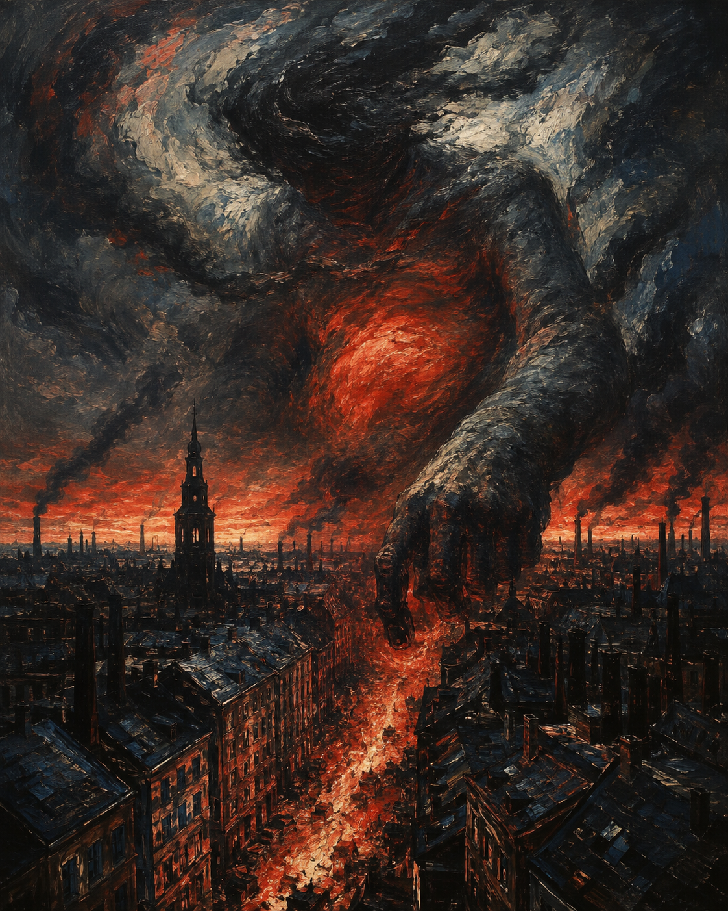

Auf einem Häuserblocke sitzt er breit.
全诗第一行即给出尺度错位：城市之神"宽宽地坐在一整片街区上"——他与建筑同量级。这种"神与城等大"的尺度，是表现主义都市诗的标准手法：城市不是无神的，而是有一个吃人的、巨大的神。
城市之神
《Der ewige Tag》（1911）· 表现主义都市诗
表现主义（早期） · Frühexpressionismus
1910年作；1911年收入诗集《Der ewige Tag》（Rowohlt, Leipzig）

图片由 AI 生成
Auf einem Häuserblocke sitzt er breit.
全诗第一行即给出尺度错位：城市之神"宽宽地坐在一整片街区上"——他与建筑同量级。这种"神与城等大"的尺度，是表现主义都市诗的标准手法：城市不是无神的，而是有一个吃人的、巨大的神。
Vom Abend glänzt der rote Bauch dem Baal,
城市之神被指认为 Baal（巴力）——旧约中的异教神，与摩洛（Moloch）的火祭意象相连。这是全诗的解读枢纽：现代都市供奉着一个要求献祭的古老神祇。夕阳把神的肚腹映红，预告末节的火。
Der Kirchenglocken ungeheure Zahl
前置第二格 + 表现主义"第二格隐喻"（Genitivmetapher）：Der Kirchenglocken ungeheure Zahl = die ungeheure Zahl der Kirchenglocken。第二格前置在表现主义里不止是语序，更是把两个不同语义域的名词强行焊接（钟声/数目）。同类见本节"schwarzer Türme Meer"（黑色塔楼的海洋）、第3节"Der Schlote Rauch"（烟囱的烟）。
Das Wetter schwält in seinen Augenbrauen.
schwällt（鼓胀、酝酿）来自弱变化动词 schwällen（使膨胀、使酝酿）。暴风雨在神的眉宇间"酝酿"——把自然现象内化为神的面部表情。
die wie Geier schauen / Von seinem Haupthaar, das im Zorne sträubt.
风暴被比作从神怒竖的头发上张望的秃鹫。Haupthaar（头发，雅语）sträubt sich（竖立、怒发）。全诗的意象从静态的"端坐"（第1节）逐步升级到末节的"火海"。
Er streckt ins Dunkel seine Fleischerfaust.
die Fleischerfaust（屠夫的拳头）——把神降格为屠夫：他不是俯视众生的主宰，而是动手宰杀的屠户。这是表现主义对"神圣"的彻底亵渎式还原。
Und der Glutqualm braust / Und frißt sie auf, bis spät der Morgen tagt.
brausen（咆哮、轰鸣）是本页与本站《那座城》（编号25）共有的动词——两页的 brausen 变位表须一致（见变位表）。frißt（fressen 的第三人称单数）用于火"吞吃"街道，把火写成野兽。结尾"直到很晚清晨才破晓"：火光烧穿了整夜。
| Infinitiv | Präsens 3. Sg. |
Präteritum | Perfekt | Partizip II | Konjunktiv II | Hilfsverb |
|---|---|---|---|---|---|---|
| glühen | glüht | glühte | hat geglüht | geglüht | glühte | haben |
| ↳ 弱变化；诗中 der Glut（第34号《普罗米修斯》）同源。 | ||||||
| brausen | braust | brauste | hat gebraust | gebraust | brauste | haben |
| ↳ 弱变化；★与本站《那座城》（编号25）的 brausen 变位表逐列一致。诗中 Und der Glutqualm braust（第19行）。 | ||||||
| schwällen | schwällt | schwällte | hat geschwällt | geschwällt | schwällte | haben |
| ↳ ★强/弱区分：诗中 Das Wetter schwällt（第13行）属弱变化及物/使役动词 schwällen（使膨胀、使酝酿）。须与强变化不及物 schwellen（schwillt – schwoll – ist geschwollen，"肿胀、上涨"）区分——两者词形相近而变化类别不同。 | ||||||
| betäuben | betäubt | betäubte | hat betäubt | betäubt | betäubte | haben |
| ↳ 弱变化，不可分；及物"使震聋、使麻木"。诗中 Der dunkle Abend wird in Nacht betäubt（第14行，被动）。 | ||||||
全诗 5×4 行，韵式 abab cdcd efef ghgh ijij（交叉韵贯穿到底）
Der Schlote Rauch … schwarzer Türme Meer … Der Kirchenglocken ungeheure Zahl（第9、12、7行）
die Wolken der Fabrik（第11行）—— 其集合形式为 das Gewölk
格奥尔格·海姆（1887—1912）是德语早期表现主义的核心诗人之一。他 belongs to "新俱乐部"（Der Neue Club）与"新艺术沙龙"（Neopathetisches Cabaret）——与雅各布·范·霍迪斯（本站编号33《世界末日》）同属一个圈子。1910年起，这些年轻诗人在柏林的沙龙朗诵中发出了一种全新的、都市的、末日式的声音。
《城市之神》1910年作，收入他生前唯一出版的诗集《永恒之日》（Der ewige Tag, Rowohlt 1911）。诗中现代都市被命名为巴力之城——一个要求火祭的古老神祇端坐在街区之上，教堂的钟声成了献给他的供品，末节他伸出"屠夫的拳头"，火海吞掉一条街。海姆的都市不是无神的现代空间，而是异教神复辟的祭坛。
海姆1912年1月16日在哈弗尔河冰上滑冰时坠水溺亡，年仅24岁。他与范·霍迪斯、格奥尔格·特拉克尔、恩斯特·施塔德勒同属表现主义早期夭折的一代。
（海姆与范·霍迪斯的具体交往细节、"表现主义都市诗开创者"之类的最高级表述，本站未回到一手材料核实，标注为待进一步核实。）
中文译文为本站学习译文（AI 辅助），采用直译。说明：(1) Baal 译"巴力"并加宗教史注；(2) Genitivmetapher（如 schwarzer Türme Meer）译文保留"黑色塔楼的海洋"的焊接感，不平滑化；(3) Fleischerfaust 译"屠夫的拳头"，保留其对"神"的亵渎式降格；(4) 交叉韵 abab 与五音步抑扬格无法在中文复制，译文以整齐的行拍近似传达其"规整"。本诗与《世界末日》（编号33）同为1910/11年表现主义都市诗，建议对照阅读（一首收紧格律、一首拆解句法）。
【三源核对】德文正文以 German Wikisource 转写的1911年《Der ewige Tag》初版（S.13）为底本，另以两个独立来源核对：Zeno.org《海姆著作与文集》第1卷第190–193页（全集本）、deutschelyrik.de（二级）。5 节、行数 4/4/4/4/4（共20行）、交叉韵 abab 贯穿——三源一致。
【正字法差异（初刊 vs 全集本）】1911年初刊（Wikisource / deutschelyrik）作 knieen（第6行，复数动词）、schwält（第13行，schwällen 的3单）；Zeno 全集本规范化为 knien、schwelt。语义无别，本站从初刊读法（knieen、schwält），差异备案。
【待进一步核实】(1) 海姆与范·霍迪斯的具体交往与朗诵活动细节；(2) "表现主义都市诗开创者"之类最高级表述的一手依据；(3) Zeno 主机本次拒绝连接，读法据既著录版次页码，待恢复后补抓快照复核；(4) 海姆溺亡的具体日期（通行说法为1912年1月16日，页面已采，未回核一手）。
【公版】海姆1912年卒，公版起始年 = 1912 + 71 = 1983。
本诗现满足规则 A（≥3 来源）、B（≥3 独立运营方：wikimedia / zeno / deutschelyrik）、D（含两个一级来源）。